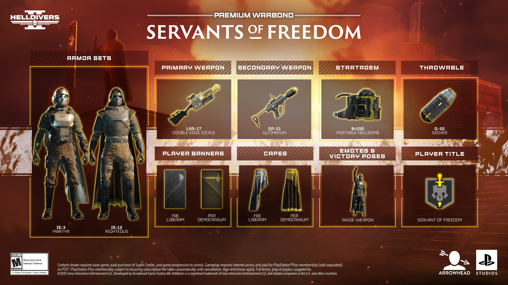

Servants of Freedom Warbond Details

-
B-100 Portable Hellbomb: A powerful explosive that can be deployed anywhere, but be careful of friendly fire!
-
LAS-17 Double-Edge Sickle: A primary weapon that deals damage to both enemies and the wielder when overheated.
-
GP-31 Ultimatum: A secondary weapon that creates a massive explosion on contact.
-
G-50 Seeker: A throwable drone that homes in on enemies and explodes near them.
-
IE-3 Martyr and IE-12 Righteous: Armor that explodes on death, dealing damage to nearby enemies.
Official Trailer